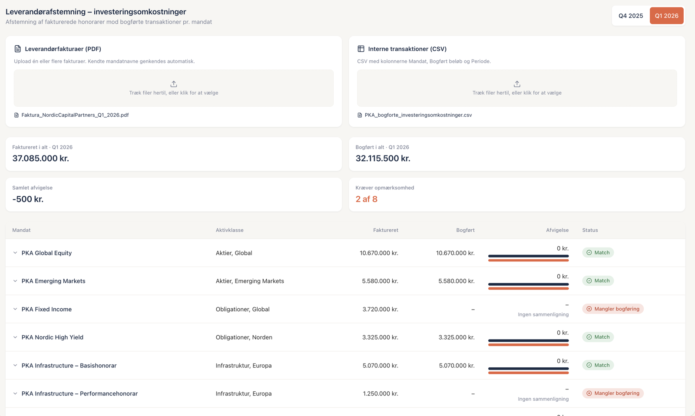

Afstem en forvalterfaktura mod jeres egen bogføring, og byg selv værktøjet
Du bygger et afstemningsværktøj. Du lægger en forvalterfaktura og jeres bogføringsfil ind, og værktøjet stiller de to op mod hinanden linje for linje: hvad stemmer, hvad afviger, og hvad er slet ikke bogført. Hver linje kan krydses af undervejs, så du kan se hvor langt du er. Alt sammen bygget i Claude, uden en linje kode i forvejen.

De fem faser
- Opret et Project. To filer i Project-konteksten.
- Tjek at Claude kan se konteksten. Ét spørgsmål.
- Byg afstemningsværktøjet. Upload, tabel, status.
- Gør det til et arbejdsredskab. Afkrydsning, fremdrift og eksport.
- Mere data, og dine egne spørgsmål. Den åbne opgave, som du løser solo.
Opret et Project, og giv det konteksten
Et Project er det fælles fundament. Her lægger du konteksten ind: hvad opgaven går ud på, og hvordan data ser ud. Selve tallene kommer først ind senere. Den opdeling er med vilje, for konteksten er den samme hvert kvartal, mens tallene skiftes ud.
PKA CC Workshop, eller noget andet du kan finde igen.Filerne ligger allerede i det materiale, du hentede ned. Du skal ikke downloade noget igen.
session1-chat/project/.De to filer i mappen
projekt-kontekst.md· rammen om opgaven og den rolle, Claude arbejder iafstemnings-kontekst.md· hvordan fakturaen og bogføringsfilen er bygget op
Tjek at Claude kan se konteksten
Før du bygger noget, så få det bekræftet med ét spørgsmål, så du ved, at Claude rent faktisk arbejder ud fra det, du lagde ind.
Byg afstemningsværktøjet
Nu bygger vi første version: den skal kunne læse en faktura og en bogføringsfil, og vise hvilke linjer der stemmer og ikke stemmer. Prompten beskriver hvad værktøjet skal kunne og hvad der tæller som en afvigelse. Den forklarer ikke filernes opbygning, for den ligger allerede i Project-konteksten.
Bliv i samme samtale. Indsæt hele prompten nedenfor.
Vis byggeprompten, indsæt hele blokken
Der kan gå op til fem minutter, før artifaktet er skrevet færdigt. Lad fanen stå, og skriv ikke i samme samtale imens, det afbryder den.
Sidespor: begynd at tænke over din egen idé imens
Start en ny samtale i samme Project. Vælg den af de to prompts, der passer på dig. Begge beder Claude om at være sparringspartner frem for at aflevere svaret, så det er dig der tænker.
Hvis du ikke har en idé endnu
Hvis du allerede har en idé
Gem det, du kommer frem til. Det er det, du kan arbejde videre med efter workshoppen.
Nu kommer kvartalets tal ind. De ligger i den anden mappe, du endnu ikke har rørt.
session1-chat/artifact-uploads/
Faktura_NordicCapitalPartners_Q1_2026.pdf· forvalterfaktura, Q1 2026PKA_bogforte_investeringsomkostninger.csv· jeres bogføring, semikolon-separeret
Gør det til et arbejdsredskab
En afstemning er ikke færdig, fordi et værktøj har regnet på den. Den er færdig, når et menneske har taget stilling til hver linje. Det skal bygges ind.
Fortsæt i samme samtale og bed Claude udbygge det eksisterende artifact.
En kollega, en revisor eller et referat skal kunne se resultatet uden at åbne dit artifact. Så skal tabellen kunne komme ud som en fil.
Solo: skaf mere data, og find mønstrene
Nu arbejder du selv. Ét kvartal kan svare på "stemmer det?". Flere kvartaler kan svare på noget andet: "hvad plejer at ske, og hvor er det begyndt at skride?" Men du har kun ét kvartal. Det kan Claude lave om på.
Få Claude til at lave mere data, og byg noget der giver indsigt
Først skaffer du dig et datasæt over flere kvartaler. Derefter bygger du videre på værktøjet, så det ikke kun siger om tallene stemmer, men også fortæller dig hvor du skal kigge næste gang.
Claude kender allerede strukturen fra Project-konteksten, så den kan generere data der ligner det rigtige. Bliv i samme samtale.
Værktøjet er bygget til én PDF og ét kvartal. De nye filer er to CSV'er med otte kvartaler, så det skal udvides, før det kan bruges.
Herfra er der ingen færdige prompts. Vælg det spørgsmål, du selv ville stille, hvis tallene lå på dit bord, og bed Claude bygge det ind i værktøjet. Nogle retninger, der er værd at forfølge:
- Den effektive honorarsats over tid. Regn faktisk betalt honorar om til bps af AUM pr. mandat pr. kvartal. Så kan du se, om en stigning skyldes at porteføljen er vokset, eller at satsen er kravlet.
- Hvem afviger igen og igen. Er det de samme mandater, der har afvigelser hvert kvartal, eller rammer det tilfældigt? Det ene er en proces, der skal rettes, det andet er støj.
- Afstanden fra faktura til bogføring. Antal dage fra fakturadato til bogføringsdato, kvartal for kvartal. Hvis den vokser, er det ikke tallene der er problemet, men arbejdsgangen.
- Koncentration. Hvor stor en andel af de samlede omkostninger ligger hos ét mandat eller én aktivklasse, og flytter den sig?
- Performancehonorarernes vægt. Hvor meget af regningen er basishonorar, og hvor meget afhænger af afkastet? Udviklingen over otte kvartaler er mere sigende end ét tal.
- Hvad ville en strammere tolerance have fanget? Lad brugeren skrue på tærsklen og se, hvor mange linjer der så ville kræve en forklaring.